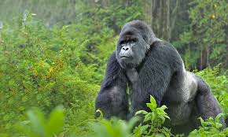

Gorila de Montaña

Hábitat y estilo de vida:
El gorila de montaña (Gorilla beringei beringei) es una de las dos subespecies de gorilas orientales y habita en las regiones montañosas de África central, específicamente en los bosques de Ruanda, Uganda y la República Democrática del Congo. Son animales altamente sociales que viven en grupos familiares liderados por un macho dominante conocido como "espalda plateada".
A diferencia de otros primates, los gorilas de montaña son en su mayoría herbívoros, alimentándose de hojas, tallos, raíces y frutas. Pasan gran parte del día buscando alimento y descansando. Su comunicación incluye vocalizaciones, expresiones faciales y contacto físico, lo que refuerza los lazos dentro del grupo. A pesar de su fuerza y tamaño, son generalmente pacíficos, aunque los machos pueden demostrar agresión si perciben amenazas.
Características
-
Reproducción:
La gestación dura aproximadamente 8.5 meses y las hembras dan a luz a una sola cría, que depende de su madre por varios años.
-
Organización social:
Viven en grupos de hasta 30 individuos, liderados por un macho espalda plateada.
-
Comunicación:
Se comunican mediante sonidos guturales, golpes en el pecho y gestos faciales.
-
Fuerza:
Son extremadamente fuertes, con una capacidad para levantar hasta 10 veces su peso corporal.
-
Estado de conservación:
Se encuentran en peligro de extinción debido a la caza furtiva y la destrucción de su hábitat.
Regresar a la página principal